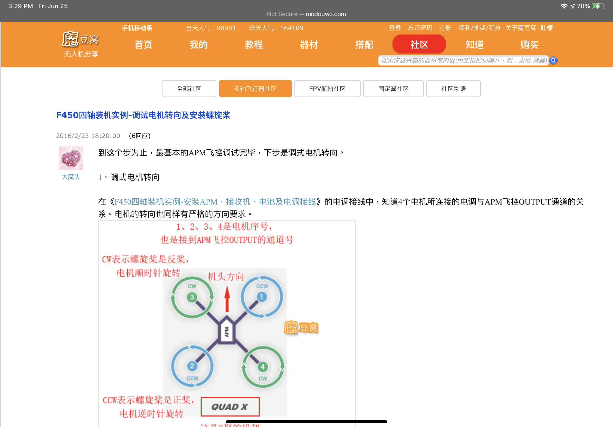
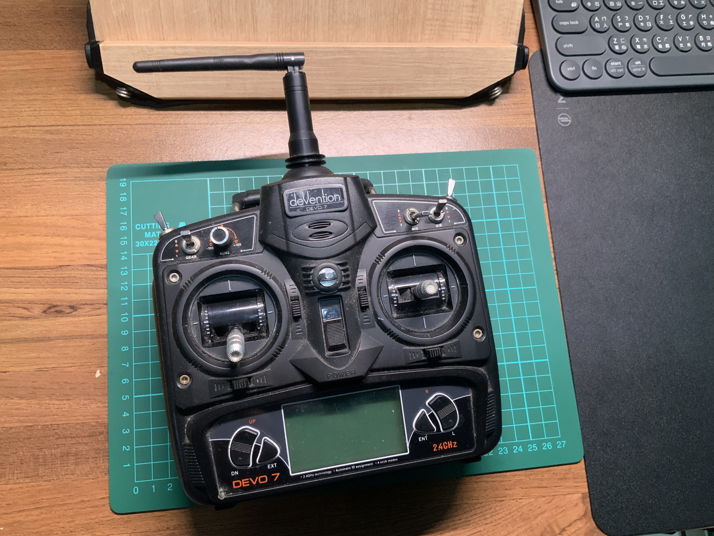

F450無人機製作
寒假沒事做就來動手做吧!
寒假的時候,switch和ps大作都打得差不多了,就想著要來做些什麼,於是就有了這次的企劃,但由於是隨意而起,並沒有太多的照片
由於一直很嚮往擁有一台自己的無人機,但是Dji的系列(就算是mini也要1萬多)實在不是我負擔的起的,因此我決定參考網上的教學來自己做一台無人機
首先我在蝦皮上訂購了F450機架(這大概是唯一我買得起的Dji產品),飛控板和四顆無刷馬達(包含4個電變),接著就是把他們組裝起來
在組裝馬達和電便時要注意機頭與藥旋轉的方向

接著來到APM的校準,這裡要用到Mission Planner這個軟體,在調種PID這個部份是我認為最困難的,由於我的APM不是使用Pixhawk(市價約5000~6000)所以沒有自動調參的功能,這部分我計畫有機會一定會換掉,因為要在做一次調整PID實在是太痛苦了 ,我是用繩子先將無人機懸空,然後一一條整參數,感覺差不多時,一調整另一個參數又會通通亂掉,感覺真的是永無止境的調參地獄
而且在一開始沒有無線傳輸模塊,常常螺旋槳捲到傳輸線就整個GG,一切又要重頭開始
而且不只有無人機方面要學習,遙控器也是一大學問,光是看到那長串的說明書,我頭就暈了
至於細節部分我就不寫上來了,總之最後第一次成功飛起來時我真的快哭了,就好像把一個小孩養大一班感動,雖然她有時候會"碰壁",但我仍會對他日後的成長感到期待,目前就是這樣了,希望以後還能在MP上做路線規劃或ˋ動返航等功能